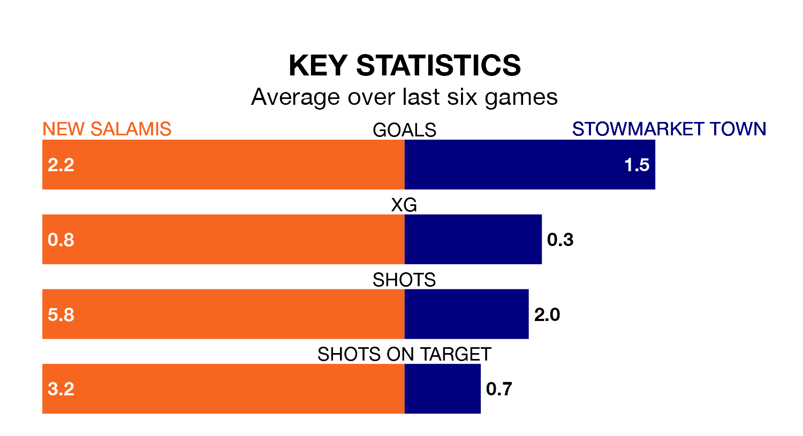

Stowmarket Town make the journey to Coles Park to play New Salamis on Saturday looking to pick up points to end their four-game losing streak.
Stowmarket's struggles have left them with just one point from their last six Isthmian League Division One – North matches, while their opponents have earned 10 from a possible 18.
Stowmarket are bottom of the table after 25 games, of which they have won none and drawn four, earning four points.
New Salamis are eight places ahead of Town in 12th, with seven wins and seven draws putting them on 28 points.
With 25 goals in 25 games so far this season, the visitors are scoring at below the league average rate with 1.0 goals per game. And they are conceding more than average, letting in 83 goals at a rate of 3.3 per game.
The home side, meanwhile, are average scorers, with 1.7 goals per game. They have conceded 2.3 goals per game.
In the last three years, New Salamis and Stowmarket have played each other on three occasions. New Salamis won two of them and they drew once.
Their last meeting was on January 13, when New Salamis won 4-3 away.
New Salamis's last match was on February 23, a 3-2 win against Ipswich Wanderers.
Stowmarket lost 6-0 against Gorleston last time out, on March 16.
Updated: 10:19 (UTC), 22/03/24